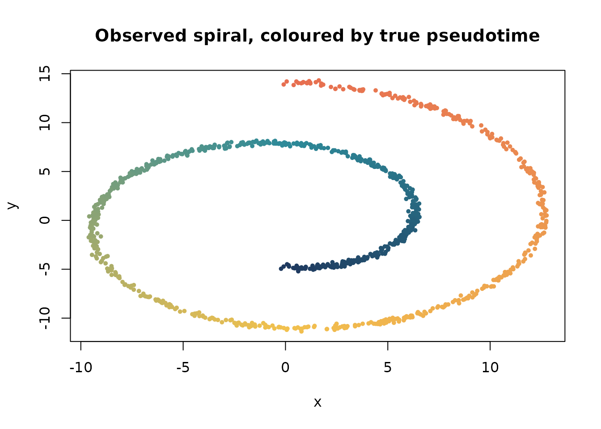
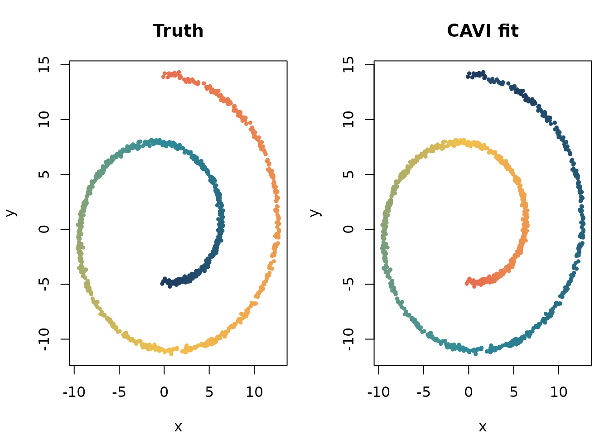
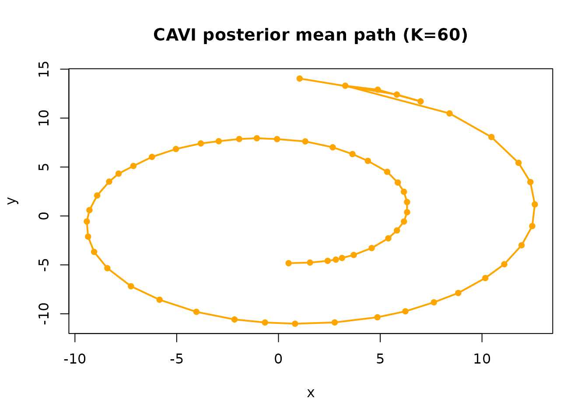

MPCurver estimates an ordering of samples and smooth
feature trajectories along that ordering. This tutorial introduces the
model, then uses a simulated spiral to show how to fit a model, assess
convergence, and extract results. The algorithm details are available
separately.
Statistical model
We observe a data matrix X = (x_{ij}) \in \mathbb{R}^{n \times d}, where row i is one sample (for example, a cell) and column j is one feature.
The single-ordering MPCurve model assumes:
- each cell has a latent position c_i \in \{1,\dots,K\},
- each feature has a smooth trajectory over the K ordered components, written as \boldsymbol{u}_j = (u_{j1},\dots,u_{jK})^\top \in \mathbb{R}^K,
- observations follow a Gaussian likelihood x_{ij} \mid c_i = k, \boldsymbol{u}_j, \sigma_j^2 \sim N(u_{jk}, \sigma_j^2),
- and each trajectory is regularized by a Gaussian Markov random field prior along the component axis: p(\boldsymbol{u}_j\mid\lambda_j) \propto \exp\!\left(-\frac{\lambda_j}{2} \boldsymbol{u}_j^\top Q_K\boldsymbol{u}_j\right), where Q_K is the random-walk precision matrix on the K bins. The default intrinsic prior penalizes differences along the trajectory; the likelihood identifies directions left unpenalized by the prior.
The model estimates a separate noise variance \sigma_j^2 and smoothness parameter \lambda_j for each feature. The noise variance is shared across grid positions. The position prior is \Pr(c_i=k)=\pi_k, with \sum_k\pi_k=1. By default these probabilities are also estimated from the data.
The fitting algorithm estimates position and trajectory distributions together with the model parameters. Its objective, coordinate updates, and stopping rule are described in Single-ordering CAVI.
Simulated spiral example
We simulate a two-dimensional spiral with:
-
n = 1000cells, - latent range
t in [1.5*pi, 4.5*pi], - measurement standard deviation
sigma = 0.12, - and a fitting grid of
num_bins = 60positions.
sim <- simulate_swiss_roll_1d_2d(
n = 1000,
t_range = c(1.5 * pi, 4.5 * pi),
noise_sd = 0.12,
seed = 1
)
X <- as.matrix(sim$obs)
t_true <- sim$t
cat("Data dimensions:", nrow(X), "x", ncol(X), "\n")
#> Data dimensions: 1000 x 2
cat("t range:", round(range(t_true), 3), "\n")
#> t range: 4.725 14.137Figure 1 shows simulated spiral observations, colored by the generating latent position.
pal <- grDevices::colorRampPalette(
c("#1F3A5F", "#2E8A99", "#F2C14E", "#E76F51")
)(256)
col_true <- pal[cut(t_true, breaks = 256, labels = FALSE)]
plot(X, col = col_true, pch = 19, cex = 0.55,
xlab = "x", ylab = "y",
main = "Observed spiral, coloured by true pseudotime")
Figure 1. Simulated spiral observations, colored by the generating latent position.
Fit the model
For your own data, supply a numeric matrix or data frame with samples
in rows and features in columns. Values must be finite: handle missing
values before fitting. MPCurver does not impute or standardize the
fitting data. Optional measurement standard deviations S
use the same units and positional order as X, as a feature
vector or a matrix of the same dimensions. See ?fit_mpcurve
for the complete input contract.
fit <- fit_mpcurve(
X,
initial_method = "fiedler",
num_bins = 60,
max_iter = 120
)
stopifnot(inherits(fit, "mpcurve"))
stopifnot(identical(fit$algorithm, "cavi"))
fit
#> MPCurve fit
#> Backend : cavi
#> Model : homoskedastic
#> Intrinsic dim : 1
#> n / d / K : 1000 / 2 / 60
#> Iterations : 54
#> Converged : yes
#> ELBO (last) : -4793.168899
summary(fit)
#> MPCurve Model Summary
#> Algorithm : cavi | Model : homoskedastic | n=1000 d=2 K=60
#> Position prior : adaptive
#> Current pi range : [7.705e-14, 0.02498]
#> Converged : yes
#> Underlying fit summary
#> <summary.cavi>
#> n = 1000, d = 2, K = 60
#> model = homoskedastic, RW(q) = 2
#> noise model = estimated_feature_variance
#> init = fiedler, discretization = quantile, adaptive = variational
#> position prior = adaptive
#> iter = 54, converged = yes
#> last ELBO = -4793.1689 (delta last = 0.001822)
#> last logLik = -4473.3999 (delta last = 0.007133)
#> pi range = [7.705e-14, 0.02498]
#> sigma2 range = [0.1072, 0.1193]
#> lambda range = [0.6632, 2.627]
#> relative change (last step):
#> ELBO: 3.8e-07
#> logLik: 1.59e-06
#> lambda_vec (L2 rel): 6.93e-05Check convergence and recovery
First, check whether the variational objective increases throughout fitting.
stopifnot(all(diff(fit$elbo_trace) >= -1e-8))
cat("ELBO monotone:", TRUE, "\n")
#> ELBO monotone: TRUE
cat("ELBO range:", round(range(fit$elbo_trace), 3), "\n")
#> ELBO range: -7599.588 -4793.169We can also compare the inferred ordering to the true latent parameter using the posterior-mean pseudotime on the normalized grid.
pseudotime_hat <- fitted_positions(fit)[, 1]
rho_t <- abs(cor(pseudotime_hat, t_true, method = "spearman"))
cat("Absolute Spearman correlation with true t:", round(rho_t, 4), "\n")
#> Absolute Spearman correlation with true t: 0.9997Visualize the fitted ordering
Figure 2 shows true pseudotime (left) and inferred CAVI pseudotime (right).
col_fit <- pal[cut(pseudotime_hat, breaks = 256, labels = FALSE)]
op <- par(mfrow = c(1, 2), mar = c(4, 4, 3.5, 1))
plot(X, col = col_true, pch = 19, cex = 0.5,
xlab = "x", ylab = "y", main = "Truth")
plot(X, col = col_fit, pch = 19, cex = 0.5,
xlab = "x", ylab = "y", main = "CAVI fit")
Figure 2. True pseudotime (left) and inferred CAVI pseudotime (right).
par(op)The fitted object also provides plots of the objective and posterior mean trajectory.
Figure 3 shows the CAVI trace plot from the fitted mpcurve object.
plot(fit, plot_type = "elbo")Figure 3. CAVI trace plot from the fitted mpcurve object.
Figure 4 shows posterior mean trajectories across the K bins.
plot(fit, plot_type = "mu")
Figure 4. Posterior mean trajectories across the K bins.
Using the results
The ordering-recovery statistic above compares estimated sample positions with the generating latent variable. Its absolute value accounts for the arbitrary direction of an inferred ordering. In an application, use known sample annotations to help interpret that direction and assess whether nearby samples have similar feature profiles.
The extraction functions use the same dimensions for one or multiple orderings:
positions <- fitted_positions(fit) # samples x orderings
trajectories <- fitted_trajectories(fit) # features x bins x orderings
trajectory_sd <- fitted_trajectories(fit, "sd")
assignment_probabilities <- fitted_assignments(fit) # features x orderings
head(positions)
#> ordering1
#> [1,] 0.7449450
#> [2,] 0.6264146
#> [3,] 0.4185339
#> [4,] 0.1016949
#> [5,] 0.7988938
#> [6,] 0.1016949Use fitted_positions(fit, "probability") for the full
position probabilities and
fitted_trajectories(fit, "covariance") for trajectory
covariance matrices. Input sample and feature names are preserved. Even
a single ordering retains its matrix or array dimension. If the
objective is still increasing at the iteration limit, continue with
fit <- do_mpcurve(fit, max_iter = 100). Continuation
inherits the fitted settings. Use
control = mpcurve_continue_control(lambda_init = 5, fix_lambda = TRUE)
to reset and fix precision at 5, or fix_lambda = FALSE to
resume its updates. Changing the random-walk order or measurement errors
requires a new fit.
When different feature groups may follow different sample orderings, see the multiple-ordering tutorial. To choose the dimension, see Estimating intrinsic dimension. For data with supplied measurement uncertainty, see the fitness analysis.